Project 4
Part A: Image Warping and Mosaicing
Welcome to my project. For repetitive content, for example finding all the points and drawing all of them, I kept it in the appendix.
A.1: Shooting the pictures
I decided to pick an indoor scenario, a specific object scenario, and an outdoor scenario. So I picked the kitchen, the gate, and the courtyard.
Kitchen
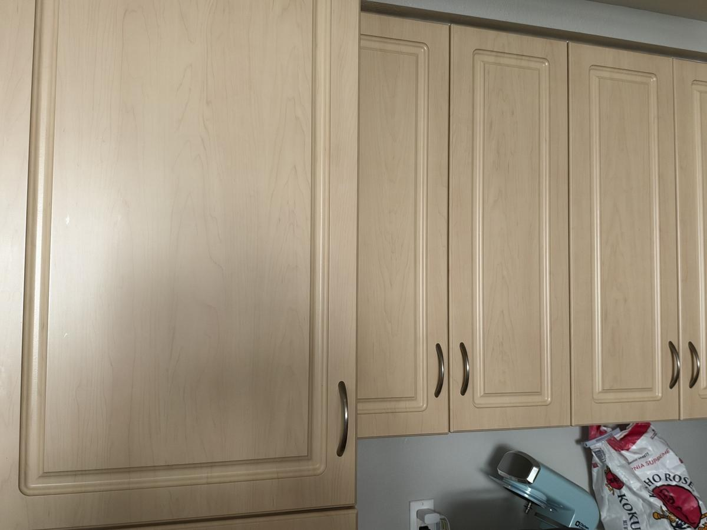
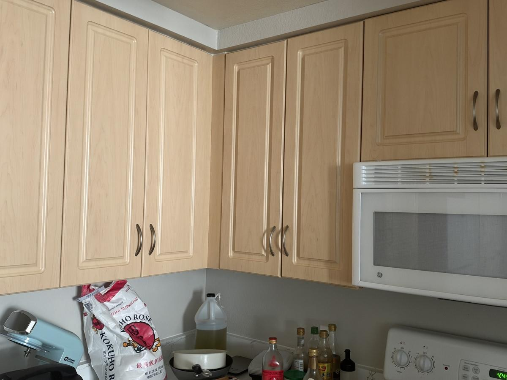
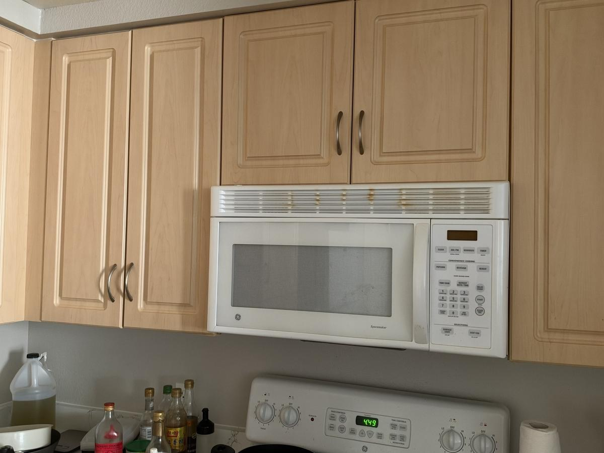
Gate
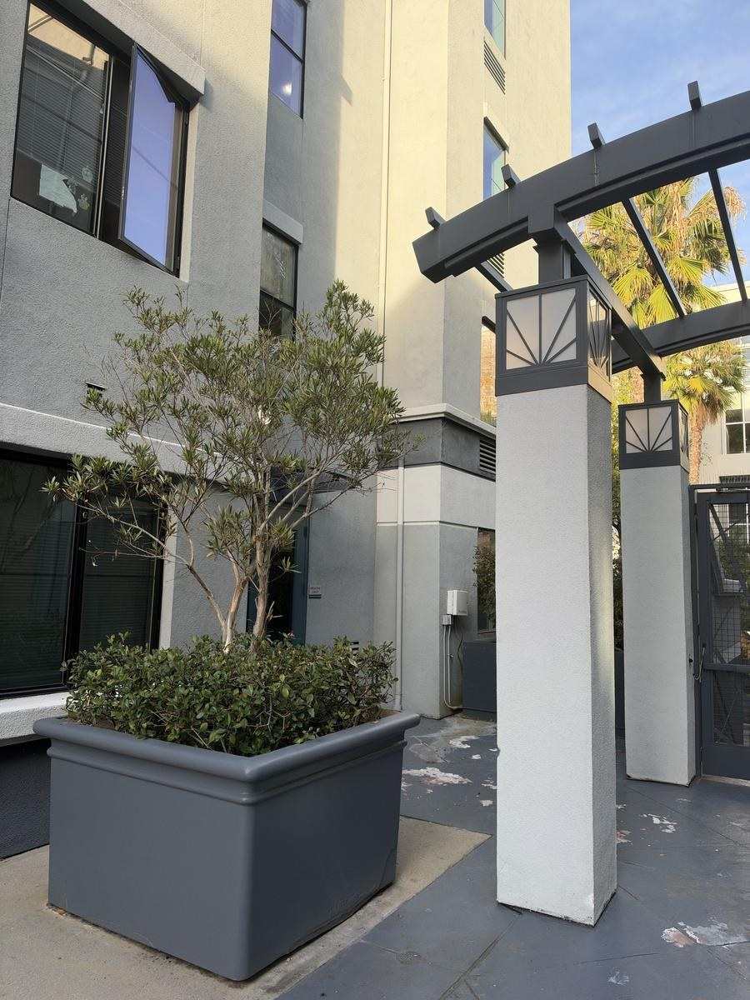
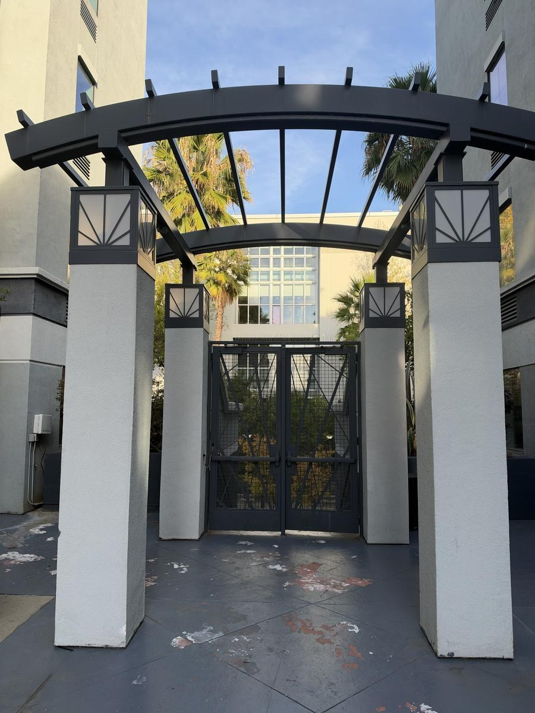
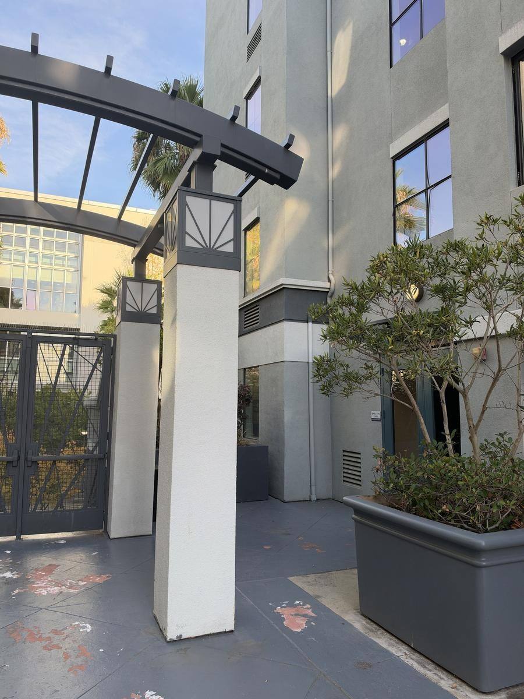
Courtyard
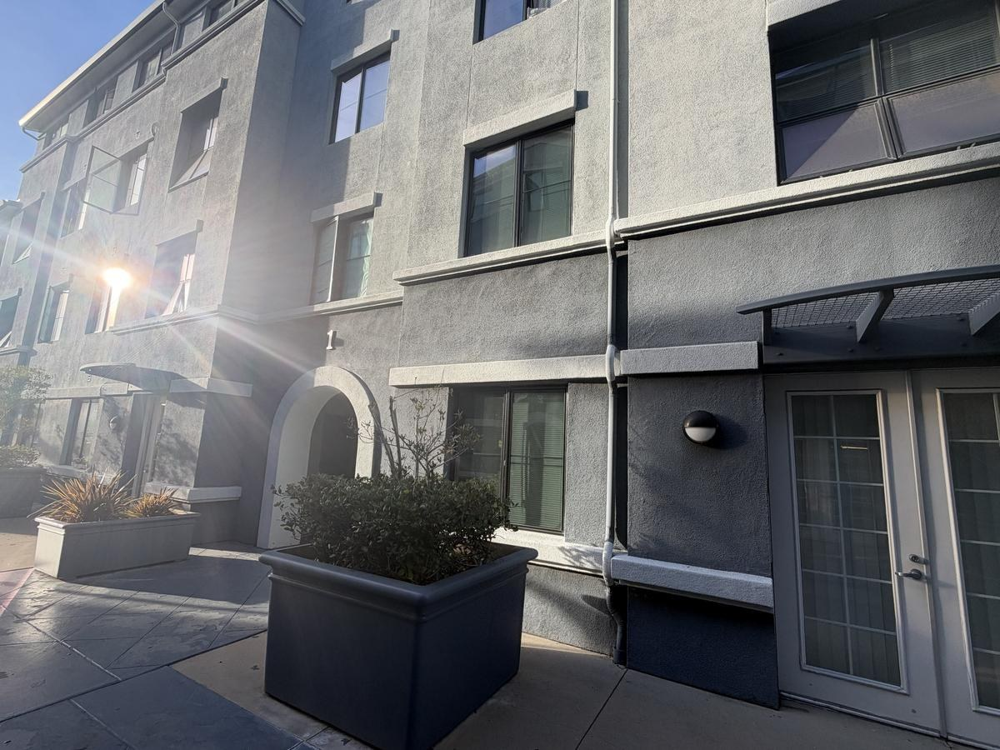
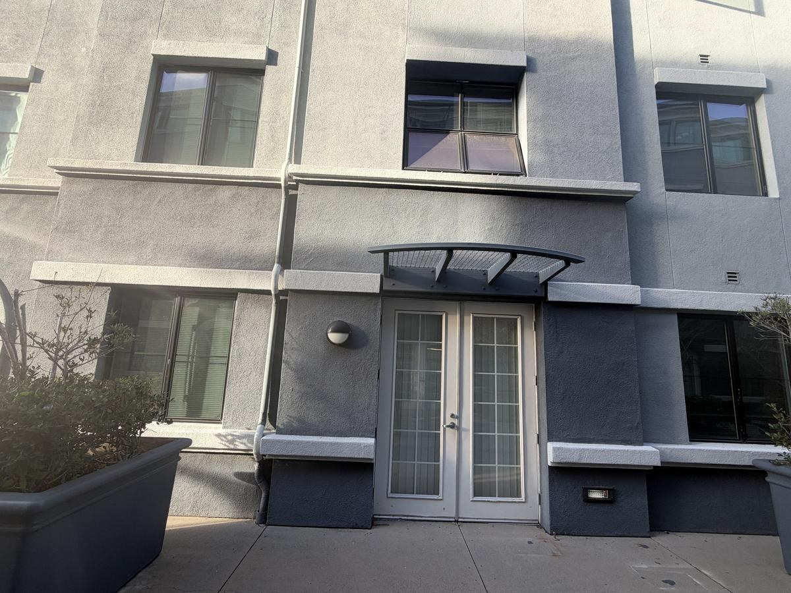
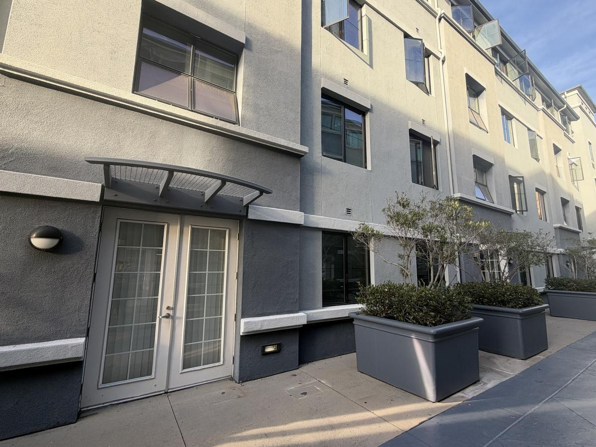
A.2: Recovering homographies
One interesting thing I learned when picking points, as shown in the first picture of the appendix, is that you don't need to (in general) pick points all over the image. You can focus on a specific object, and as long as your points are accurate, you achieve the same effect. For instance, in the first appendix image, I tried picking points across the whole image, but it didn't align very well because there isn't much detail there. So I focused on a specific object and got a good result, because there is a lot more detail to align on that object.
We start from this matrix multiplication equation, which maps \((x, y)\) into \((x', y')\):
\[ \begin{bmatrix} a & b & c \\ d & e & f \\ g & h & 1 \end{bmatrix} \begin{bmatrix} x \\ y \\ 1 \end{bmatrix} = \begin{bmatrix} wx' \\ wy' \\ w \end{bmatrix} \]From the third row, we find \(w\) to be the following:
\[ gx + hy + 1 = w \]Next, we substitute \(w\), and we can not care about the third row, and only the first two. So we get these two equations:
\[ ax + by + c = (gx + hy + 1)\,x' \qquad dx + ey + f = (gx + hy + 1)\,y' \]We're trying to isolate and find \(x'\) and \(y'\), so we moved everything to the left side. So we finally get:
\[ ax + by + c - gxx' - hyx' = x' \qquad dx + ey + f - gxy' - hyy' = y' \] \[ \begin{bmatrix} x & y & 1 & 0 & 0 & 0 & -xx' & -yx' \\ 0 & 0 & 0 & x & y & 1 & -xy' & -yy' \end{bmatrix} \begin{bmatrix} a \\ b \\ c \\ d \\ e \\ f \\ g \\ h \end{bmatrix} = \begin{bmatrix} x' \\ y' \end{bmatrix} \]Next, it's just about substituting in the values of the points we found. Each pair of points gives two equations and there are 8 unknowns, so we need at least 4 pairs. With \(n\) pairs, we stack all \(2n\) equations into one system \(Ah = b\):
\[ \underbrace{\begin{bmatrix} x_1 & y_1 & 1 & 0 & 0 & 0 & -x_1x_1' & -y_1x_1' \\ 0 & 0 & 0 & x_1 & y_1 & 1 & -x_1y_1' & -y_1y_1' \\ & & & & \vdots & & & \\ x_n & y_n & 1 & 0 & 0 & 0 & -x_nx_n' & -y_nx_n' \\ 0 & 0 & 0 & x_n & y_n & 1 & -x_ny_n' & -y_ny_n' \end{bmatrix}}_{A \;(2n \times 8)} \begin{bmatrix} a \\ \vdots \\ h \end{bmatrix} = \underbrace{\begin{bmatrix} x_1' \\ y_1' \\ \vdots \\ x_n' \\ y_n' \end{bmatrix}}_{b} \]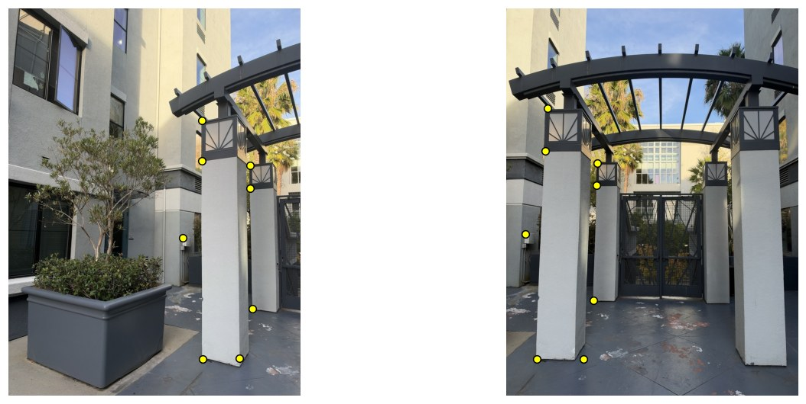
Next, for the real numbers, this is the full system \([A \mid b]\) for these 8 pairs:
\[ \left[\begin{array}{rrrrrrrr|r} 597 & 348 & 1 & 0 & 0 & 0 & -75819 & -44196 & 127 \\ 0 & 0 & 0 & 597 & 348 & 1 & -184473 & -107532 & 309 \\ 597 & 472 & 1 & 0 & 0 & 0 & -71043 & -56168 & 119 \\ 0 & 0 & 0 & 597 & 472 & 1 & -263874 & -208624 & 442 \\ 745 & 487 & 1 & 0 & 0 & 0 & -209345 & -136847 & 281 \\ 0 & 0 & 0 & 745 & 487 & 1 & -356855 & -233273 & 479 \\ 745 & 557 & 1 & 0 & 0 & 0 & -207855 & -155403 & 279 \\ 0 & 0 & 0 & 745 & 557 & 1 & -407515 & -304679 & 547 \\ 538 & 710 & 1 & 0 & 0 & 0 & -31742 & -41890 & 59 \\ 0 & 0 & 0 & 538 & 710 & 1 & -376062 & -496290 & 699 \\ 600 & 1085 & 1 & 0 & 0 & 0 & -57000 & -103075 & 95 \\ 0 & 0 & 0 & 600 & 1085 & 1 & -652200 & -1179395 & 1087 \\ 752 & 930 & 1 & 0 & 0 & 0 & -201536 & -249240 & 268 \\ 0 & 0 & 0 & 752 & 930 & 1 & -679808 & -840720 & 904 \\ 712 & 1083 & 1 & 0 & 0 & 0 & -169456 & -257754 & 238 \\ 0 & 0 & 0 & 712 & 1083 & 1 & -772520 & -1175055 & 1085 \end{array}\right] \]We solve this using least squares (np.linalg.lstsq), which finds the best \(h\), the one that makes the total squared error \(\lVert Ah - b \rVert^2\) as small as possible. This gives the homography:
A.3: Warping the images
My warping is done in four steps.
- Calculate the new image boundary by passing the corners of the old image through our homography matrix.
- Use an inverse homography mapping of every pixel in the new image boundary to find where it comes from in the old image.
- The difference between nearest neighbor and bilinear: nearest neighbor locates the closest pixel to take its value, while bilinear takes a weighted average of the surrounding pixels it lands in.
- Finally, for rectify, I pick the four corners as points and map them to a rectangle with the relevant dimensions: 85.6 × 54 mm for the ID card and roughly 3.7 × 8.5 in for one panel of the folded flyer.
Student ID card
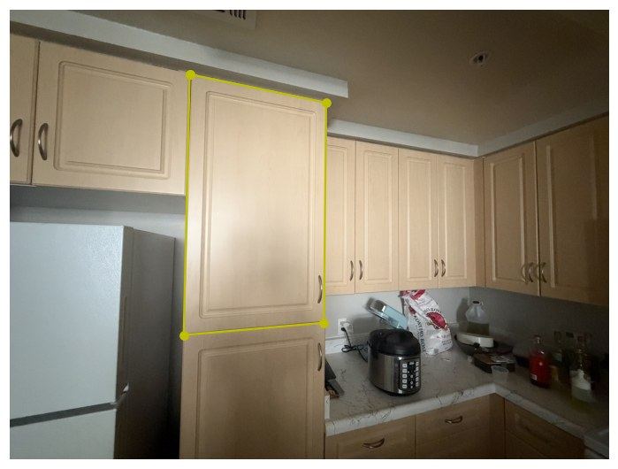
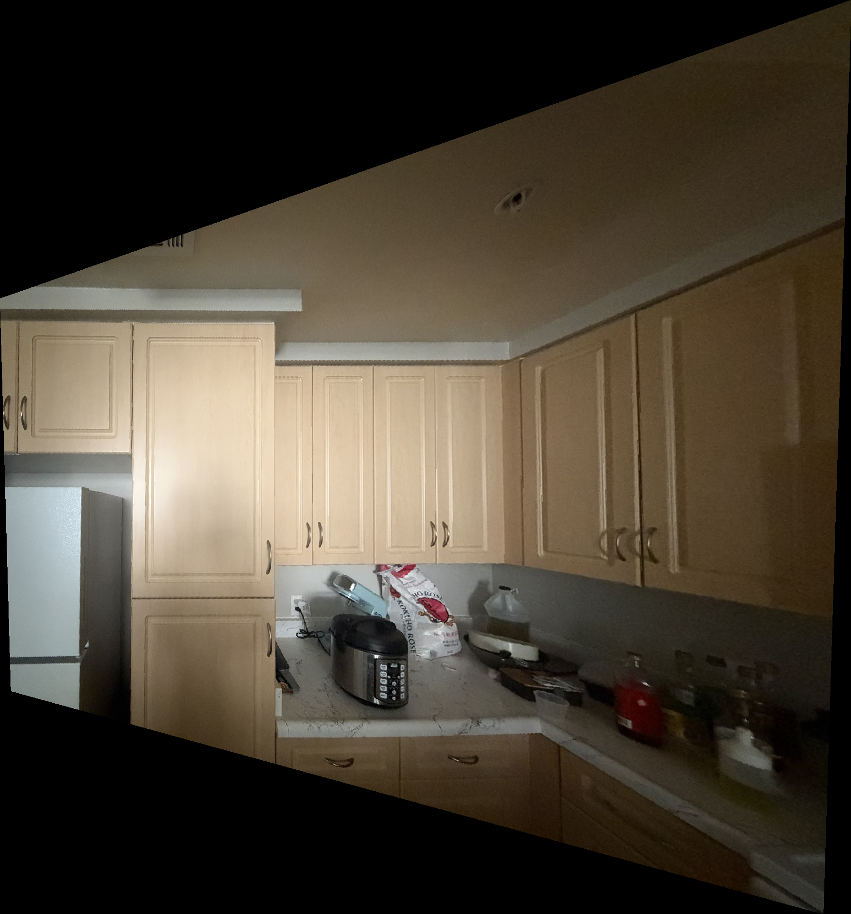
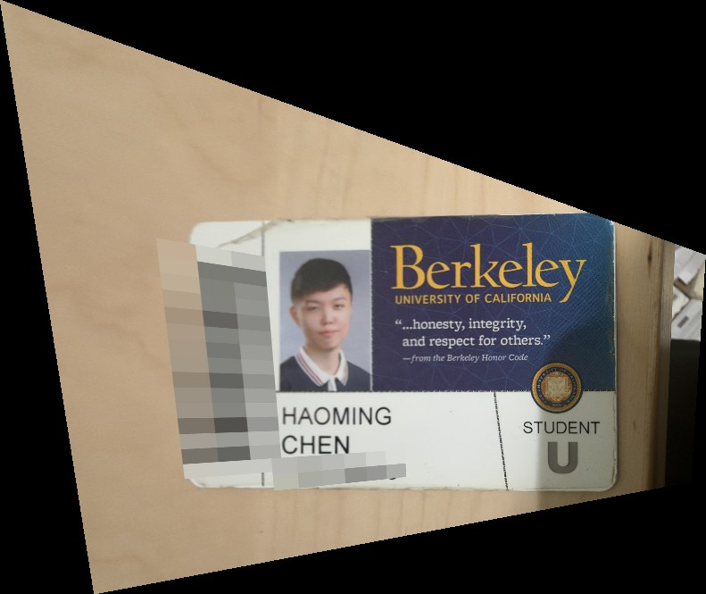
Flyer
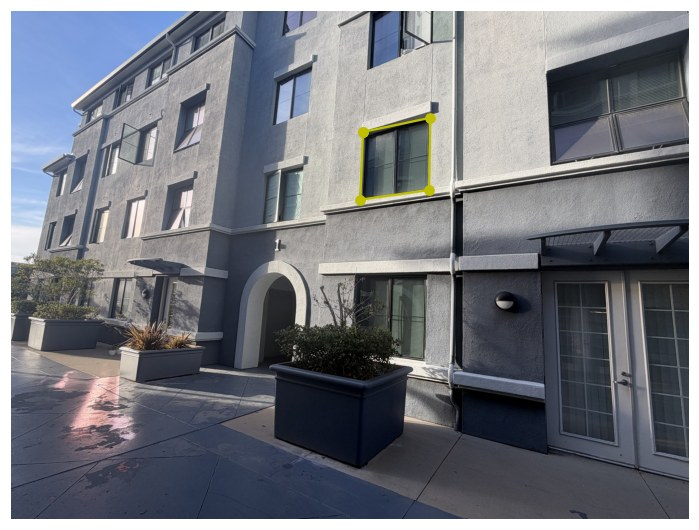
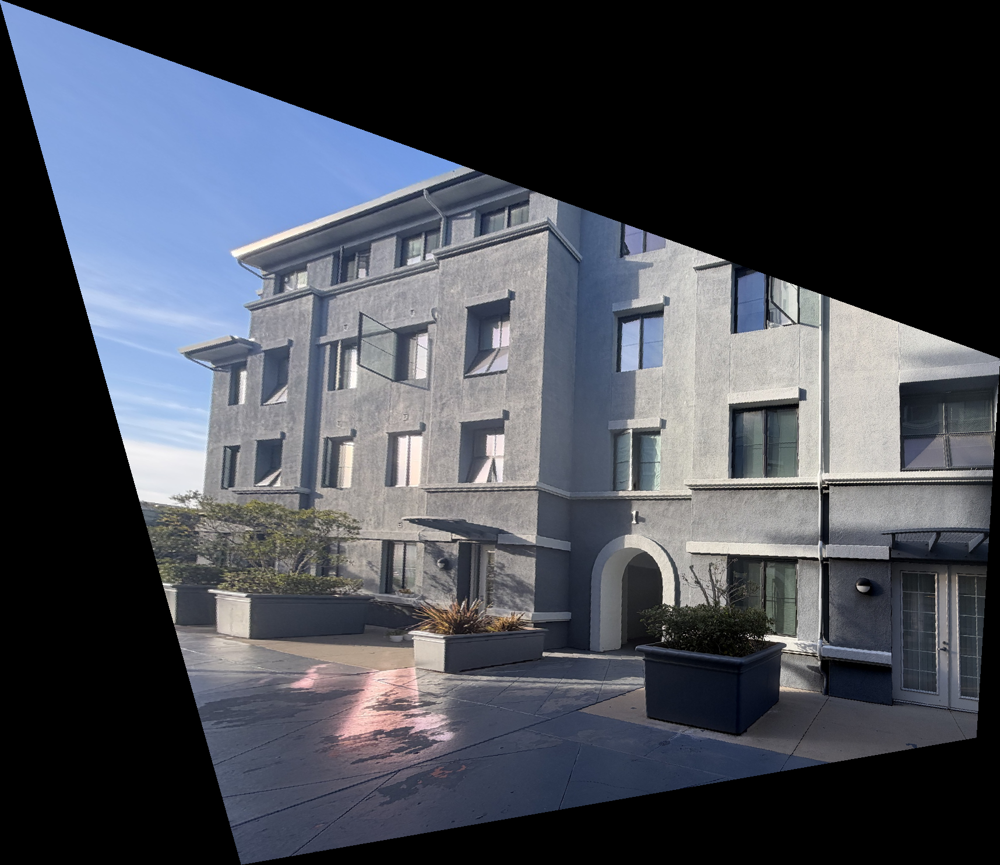
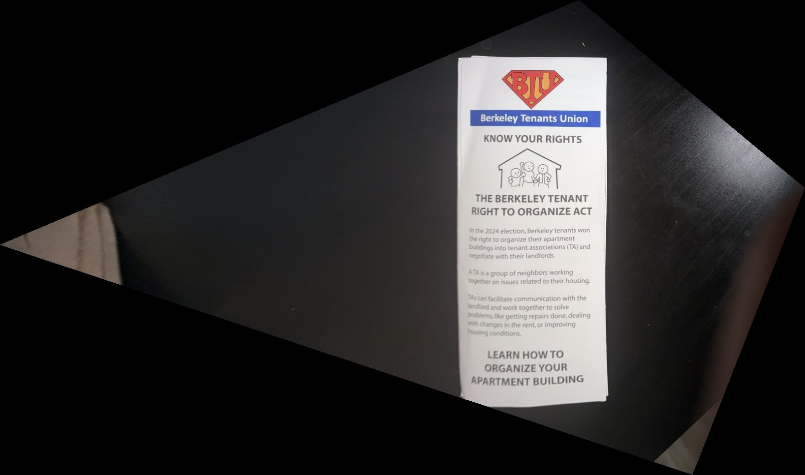
Nearest neighbor vs. bilinear
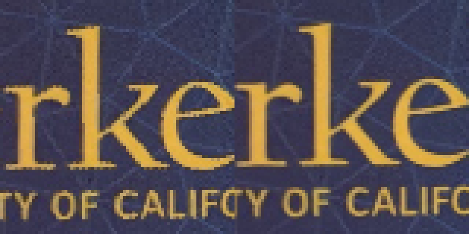
Honestly, from an overall point of view, there is not a huge difference, especially in time. Both finished quickly, under a second. Bilinear might take a little longer: after timing, I found nearest neighbor takes 0.03 s and 0.07 s on the two images while bilinear takes 0.06 s and 0.14 s, so bilinear actually takes twice as long. The real difference is when zooming in: bilinear generally gives a smoother result, thanks to it smoothing over the surrounding pixels instead of picking one.
A.4: Blending into a mosaic
Since we already have the H for these cases, we're basically doing the same as A.3. We still calculate the boundaries, but we have three images, so we take the maximum boundary out of the 12 calculated corner points together. Next, we apply the same inverse mapping and use bilinear interpolation to find the pixel values.
For the actual blending, I use the suggested alpha idea, where each image's weight is 1 at its center and falls off linearly to 0 at its edges, and take the weighted average of the overlapping images.
Kitchen
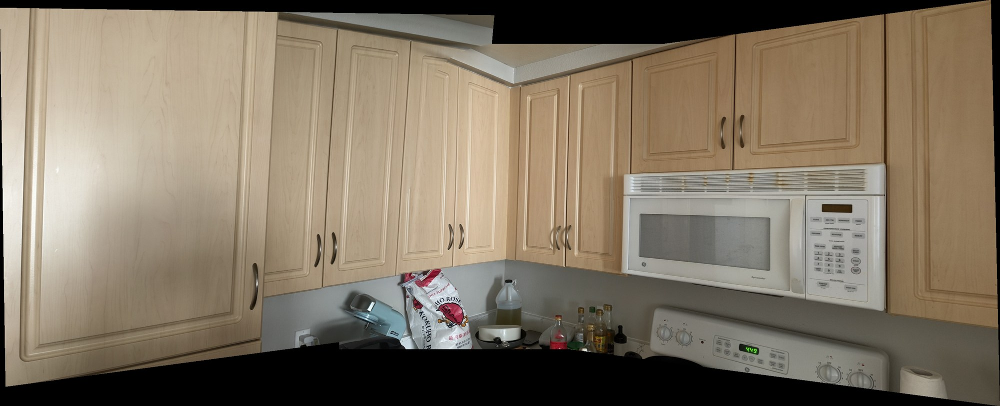
Gate
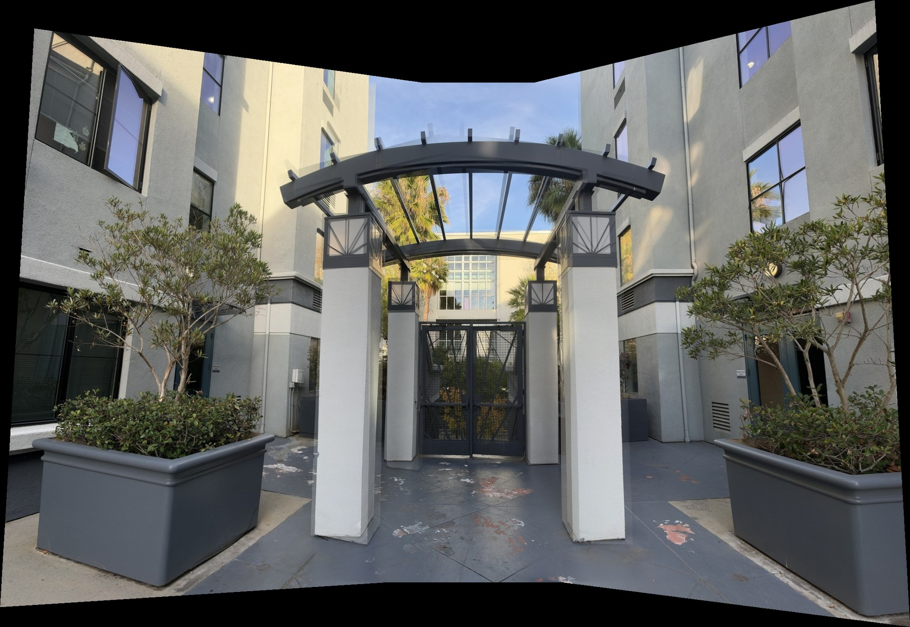
Courtyard
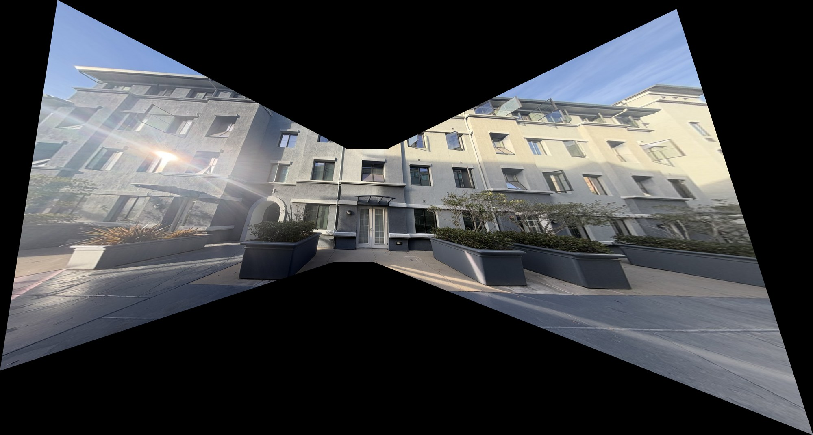
The courtyard was shot with the ultrawide lens, so the three photos cover a very wide angle. Projecting that onto a single plane stretches the left and right images heavily, which gives the bow-tie shape.
Appendix A: correspondences for every pair
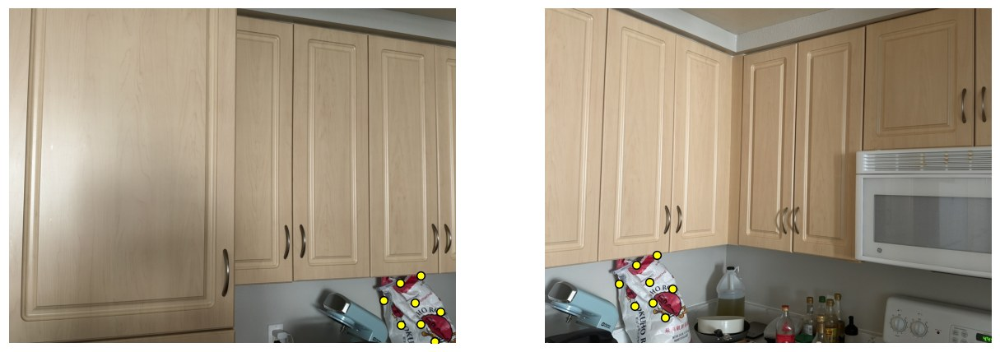
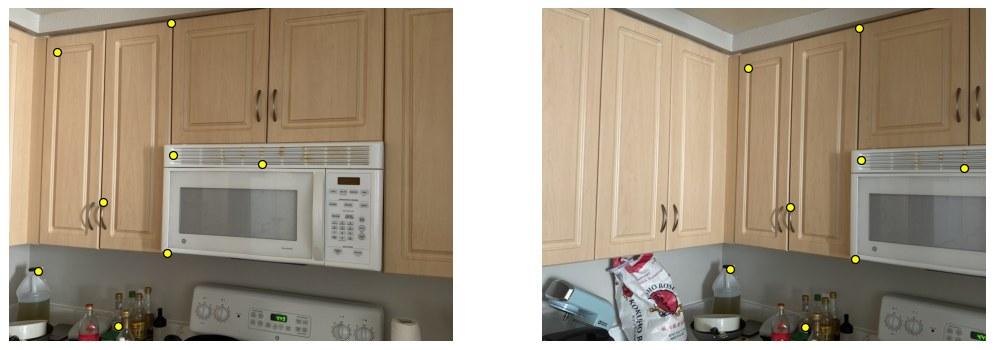

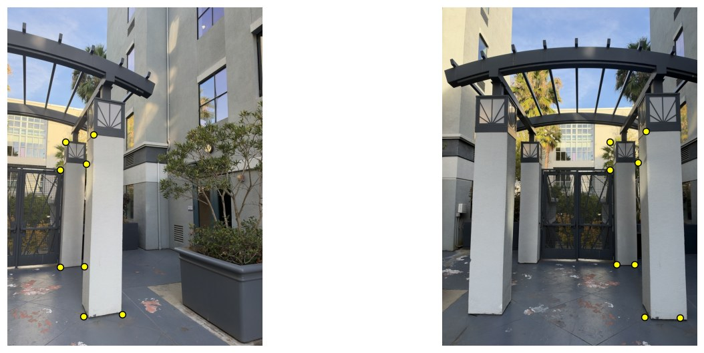
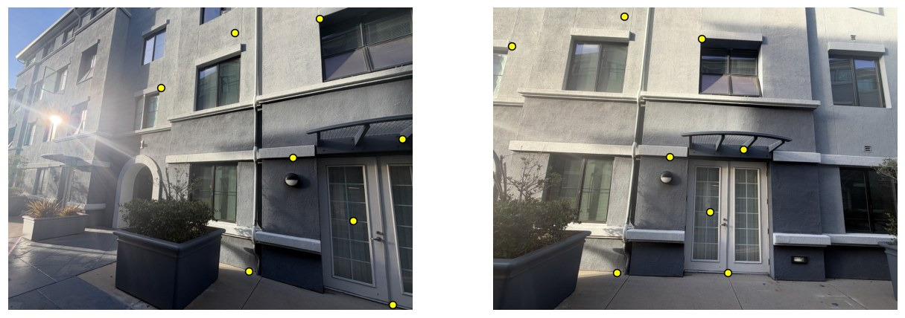
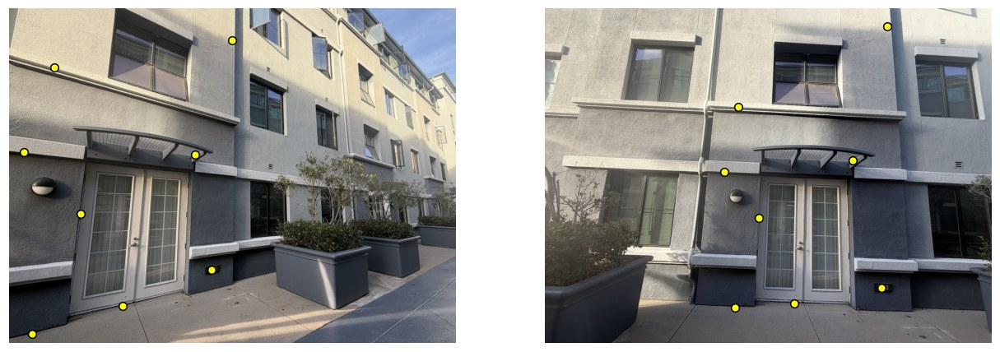
Homographies
Kitchen, left → center
\[ H = \begin{bmatrix} 1.46621 & -0.11033 & -1117.36687 \\ 0.13781 & 1.37117 & -199.63772 \\ 0.00037 & 0 & 1 \end{bmatrix} \]Kitchen, right → center
\[ H = \begin{bmatrix} 0.77596 & 0.02630 & 434.62686 \\ -0.08997 & 0.95476 & 35.74160 \\ -0.00022 & 0.00003 & 1 \end{bmatrix} \]Gate, left → center
\[ H = \begin{bmatrix} 1.21876 & -0.04337 & -571.19967 \\ 0.16041 & 1.10860 & -129.22083 \\ 0.00020 & -0.00004 & 1 \end{bmatrix} \]Gate, right → center
\[ H = \begin{bmatrix} 0.74529 & 0.03676 & 398.53887 \\ -0.22469 & 0.91456 & 55.88121 \\ -0.00029 & -0.00001 & 1 \end{bmatrix} \]Courtyard, left → center
\[ H = \begin{bmatrix} 2.95271 & -0.18054 & -1172.58981 \\ 0.94025 & 2.25182 & -741.99591 \\ 0.00166 & -0.00003 & 1 \end{bmatrix} \]Courtyard, right → center
\[ H = \begin{bmatrix} 0.13495 & 0.01950 & 457.88542 \\ -0.38634 & 0.65630 & 195.75122 \\ -0.00070 & -0.00001 & 1 \end{bmatrix} \]Student ID card, rectification
\[ H = \begin{bmatrix} -0.07379 & 1.21880 & -108.26483 \\ -0.68991 & 0.23695 & 416.04047 \\ -0.00020 & 0.00118 & 1 \end{bmatrix} \]Flyer, rectification
\[ H = \begin{bmatrix} 0.58701 & -0.66798 & 243.26470 \\ 0.39557 & 0.29334 & -118.59121 \\ 0.00029 & -0.00069 & 1 \end{bmatrix} \]Part B: Feature Matching for Autostitching
In Part A, I clicked and manually chose the corresponding points between images. In Part B, an algorithm finds them automatically.
B.1: Harris corners and ANMS
I used the provided harris.py function, as instructed. I interpret Harris as a corner-finding algorithm: a corner has strong contrast (gradient) when you slide a window over it in any direction, compared to something like a smooth wall or an edge. The left image shows all the Harris corners found, the middle one shows the 1000 strongest by absolute value, and the right one shows the ANMS result.
ANMS focuses on the following equation, the suppression radius of each corner \(i\):
\[ r_i = \min_{j} \lVert \mathbf{x}_i - \mathbf{x}_j \rVert \quad \text{such that} \quad f(\mathbf{x}_i) < c_{\text{robust}}\, f(\mathbf{x}_j), \qquad c_{\text{robust}} = 0.9 \]Keeping the 1000 corners with the largest radius gives a more diverse distribution of points. Strong corners tend to cluster together, so instead of looking at absolute strength, ANMS looks at relative maxima by selecting on radius, which spreads the points out much better. Below are the results for all three image sets.
Gate
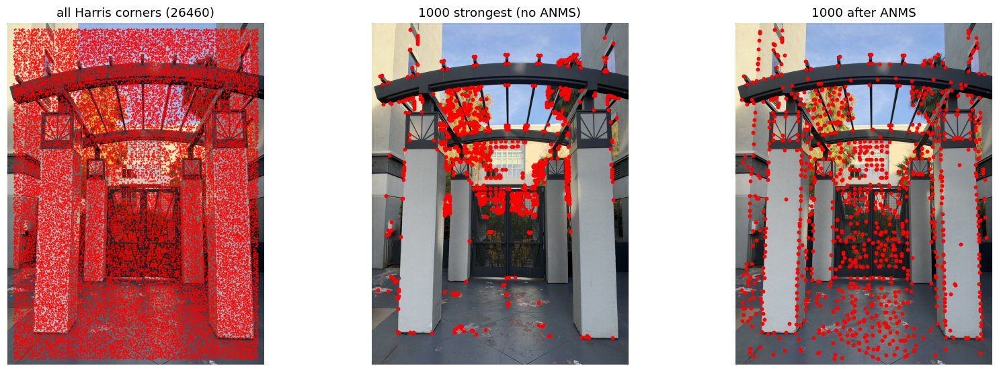
Kitchen
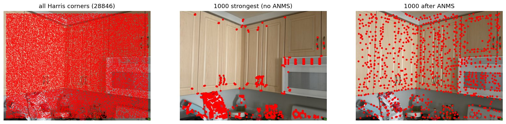
Courtyard
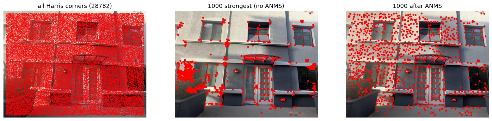
The three sets behave similarly; I don't see anything notably different between them.
B.2: Feature descriptors
We then take 40×40 window patches around all the corners, and we need to pre-process them. The general idea is to normalize, so that local extremes are less influential on the overall feature matching. The normalization happens in two ways. One is a Gaussian blur (sigma 2.5) before sampling the window down to 8×8, which handles it from the absolute, pixel-level perspective. The other is bias/gain normalization (subtract the mean, divide by the standard deviation), which handles brightness and contrast differing by a factor between photos.
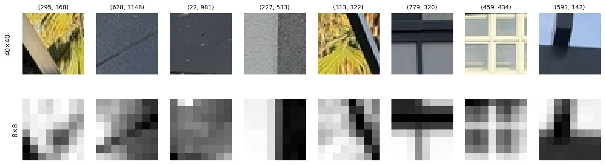
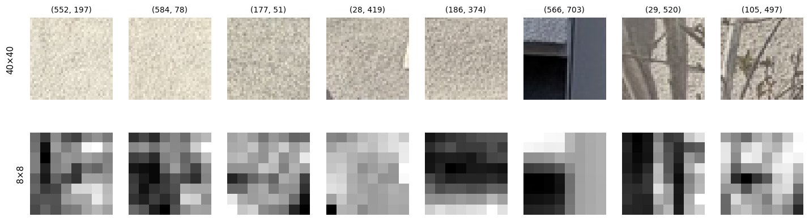
B.3: Feature matching
After pre-processing, we try to find feature matches. I went with Lowe's idea and only count a match when the nearest neighbour is much closer than the second nearest:
\[ \frac{d_{1\text{-NN}}}{d_{2\text{-NN}}} < 0.6 \]This is a very interesting idea, and I'll explain more in the last paragraph. Basically, it gave me a new perspective on seeing images in a relative rather than absolute manner.
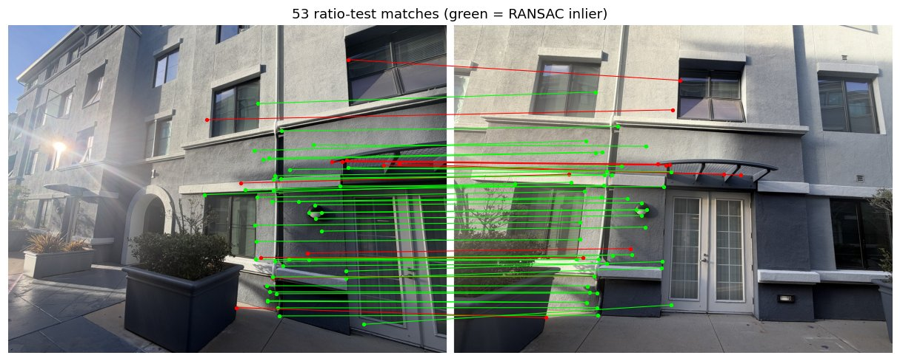
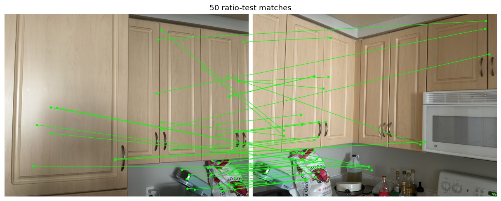
B.4: RANSAC and automatic mosaics
After all that, we still have a decent amount of garbage matches, so we follow the idea of RANSAC:
- Pick 4 random matches and compute the exact \(H\) (with
computeHfrom Part A). - Map every matched point from image 1 through that \(H\) and count the inliers, which here means the matches that land within 2 pixels of their partner in image 2.
- Repeat this 5000 times and keep the largest inlier set.
- Refit \(H\) with least squares on all the inliers of the best set.
Basically, we try to find the \(H\) that the most matches agree with, and then fit it on all of those agreeing pairs. A lot of matches get rejected. In the kitchen below, green lines are the RANSAC inliers and red lines are the rejected matches: every match on the repetitive cabinet doors is thrown out, and only the ones on the rice bag agree with a single homography.
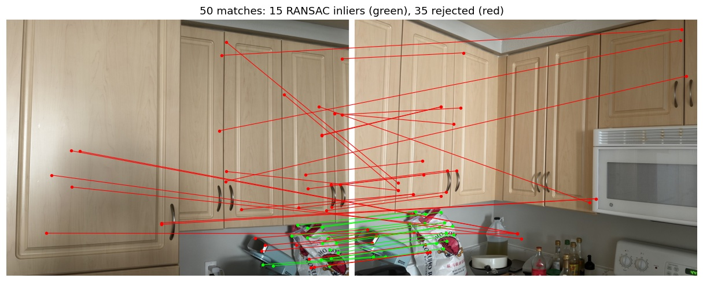
Then we just proceed with the Part A code using the homographies found, and get the following results. Manual on the left, automatic on the right:
Kitchen
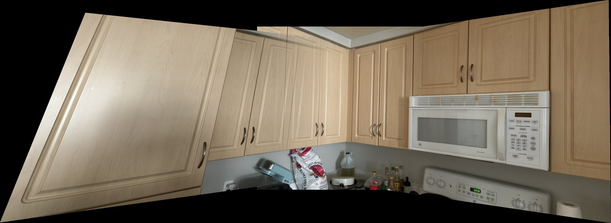
Gate
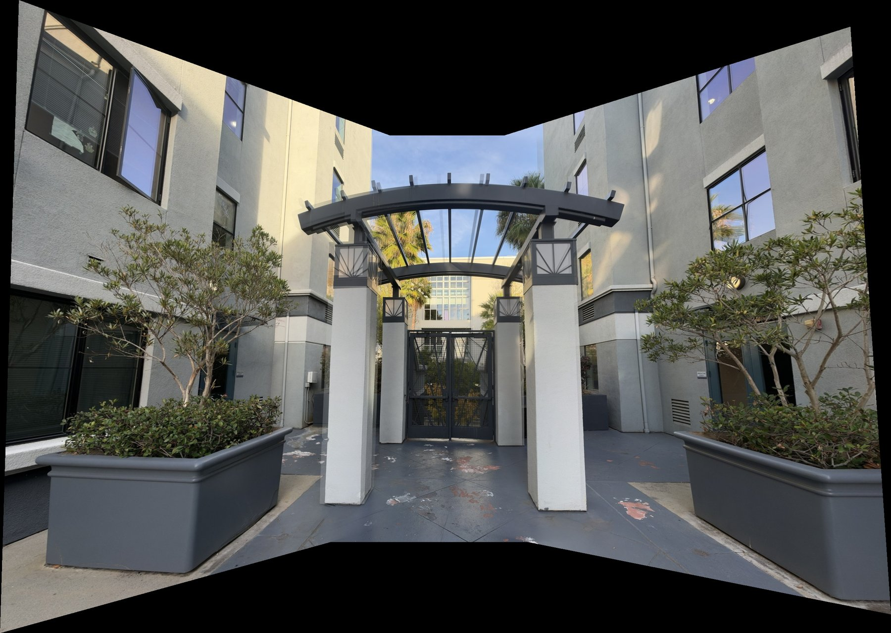
Courtyard
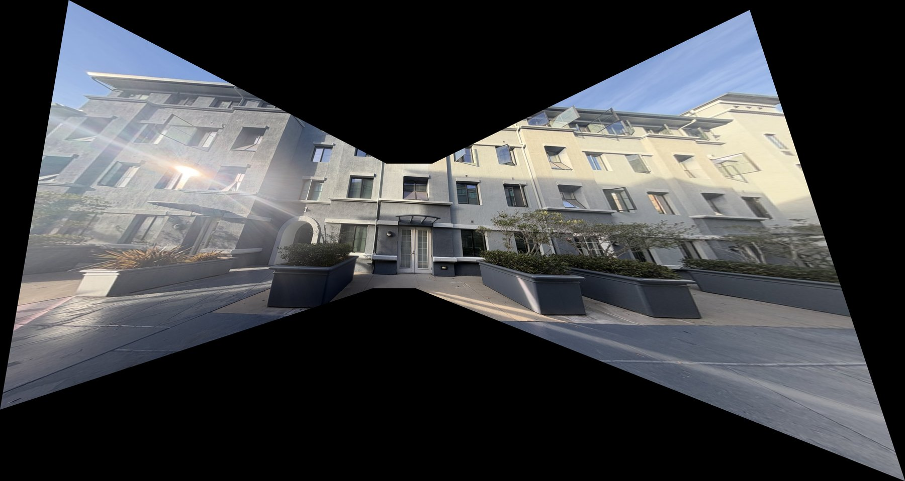
First of all, I don't think there is a huge change. If anything, the manual version might even be a little better, especially for the kitchen, which is contrary to what I expected. Looking closer, the automatic method did a better job on the gate and courtyard than on the kitchen. I think this is because there are more corners to find in the first place on the gate and courtyard, while the kitchen has big smooth surfaces, which make good features really hard to find. Another thing I learned is that more matches don't automatically make things better: the automatic version uses 15 to 41 inliers per pair against only 8 hand-clicked pairs, and the hand-clicked ones often work just as well or better.
What I learned
What I find coolest about this project is that it taught me to look at things relatively. This shows up in both B.3 and B.4. In B.3, it is using the ratio between the first and second nearest-neighbour distances as the threshold, instead of an absolute distance. In B.4, it is RANSAC: a homography is not judged on its own, but by how many of the other matches agree with it. Both taught me not to look at the absolute but at the relative, which often works better, because that's how we find features and differences in the first place. I think this idea will generalize well beyond these specific cases.
Appendix B: all matches and RANSAC inliers
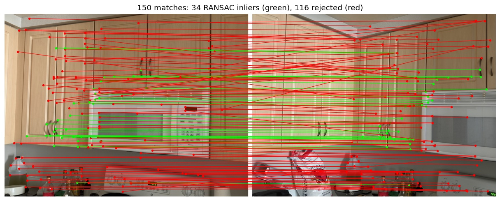
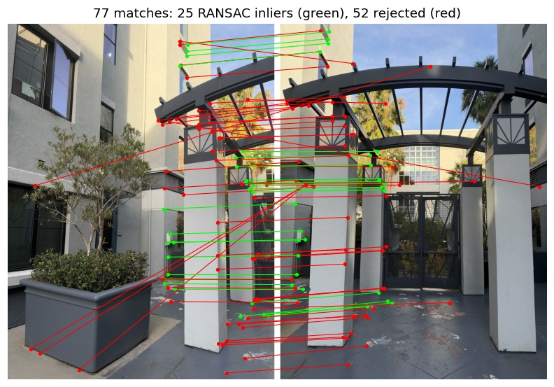
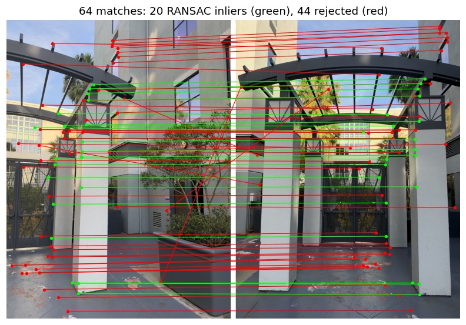
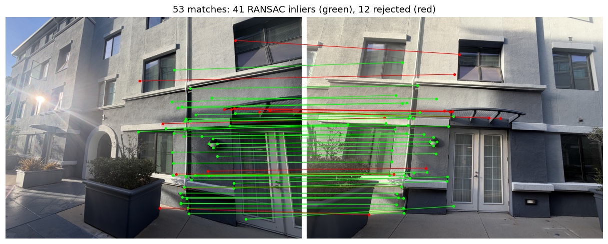
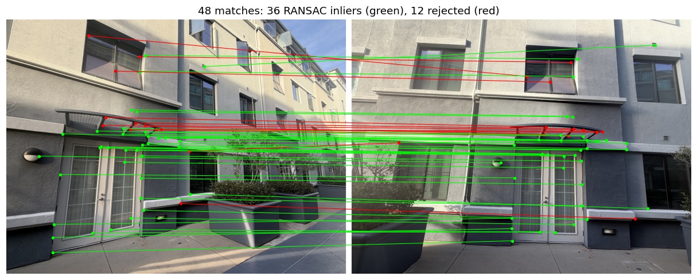
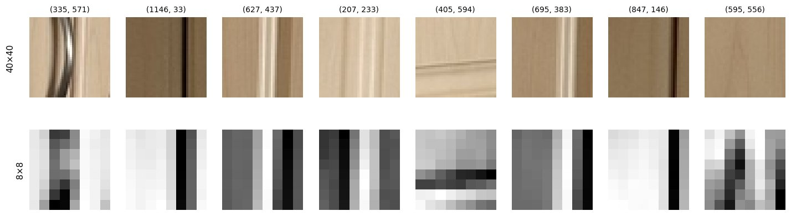